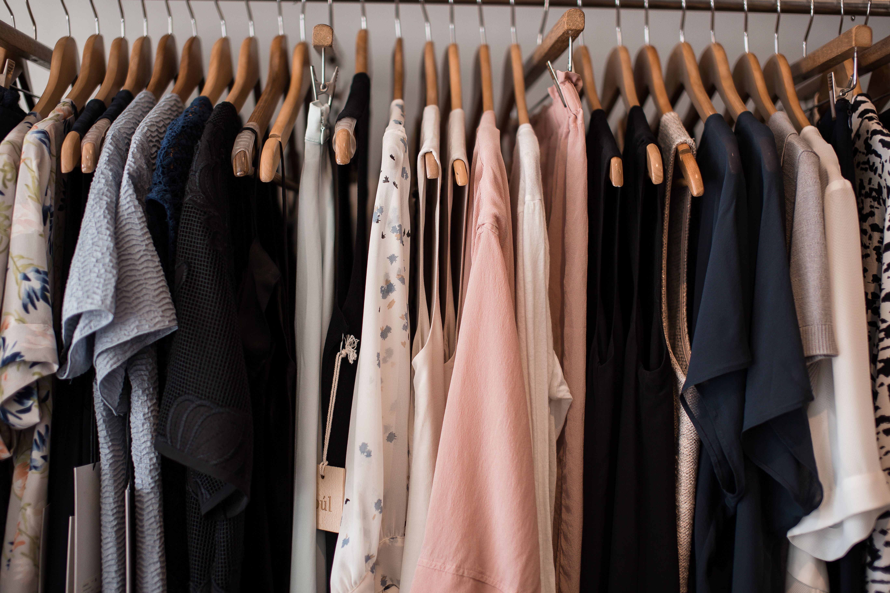
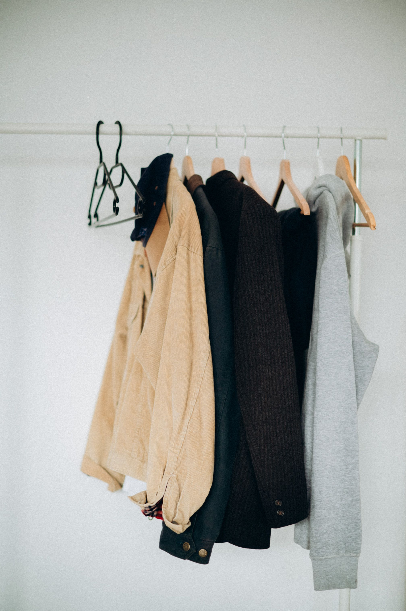

Here is a basic blueprint of what to own:
| Category | Quantity | Recommended Palette |
|---|---|---|
| Tops | 5 Pieces | White, Cream, Grey |
| Pants | 3 Pieces | Blue Denim, Black |
| Outerwear | 2 Pieces | Camel, Charcoal |
| Footwear | 3 Pairs | Leather,Rubber shoes |
These four conditional pillars represent the architecture of a balanced wardrobe. By selecting neutral bases and tailored textures, these capsule elements interact effortlessly-allowing you to mix, match, and curate high-end looks with minimal pieces.


Watch this step-by-step masterclass to see how to assemble your foundational capsules from scratch. This video breaks down clothing scale, proportion rules, and layering techniques to show you exactly how to make your baseline items flatter your silhouette.